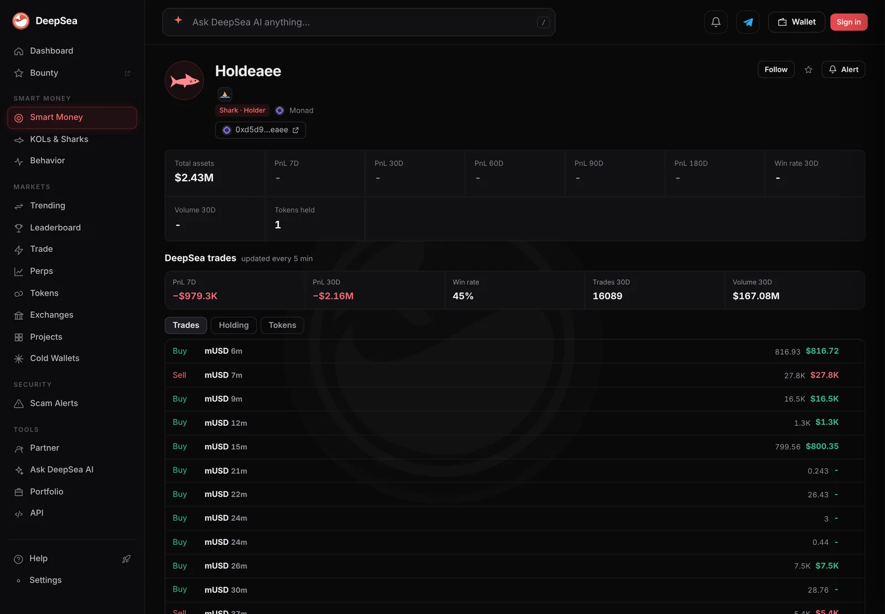

A Monad wallet bought $1 million of MetaMask's mUSD in an hour and traded $167 million in 30 days
DeepSea counts 13,802 mUSD trades by one Monad shark in a month, more mUSD bought than DefiLlama counts on all of Monad. Who runs it is unknown.
Key points
- In the hour to 6:36 a.m. ET on November 14, 2026, the Monad wallet Holdeaee bought $1.01 million of mUSD and sold $745,049, DeepSea's flow table shows.
- Over 30 days DeepSea counts 16,089 trades and $167.08 million of volume for the wallet, as of 7:01 a.m. ET. In mUSD alone it bought $26.40 million and sold $23.07 million in 13,802 trades.
- DefiLlama counts $7.75 million of mUSD on Monad, out of $27.51 million in total. The wallet now holds $2.43 million, all of it in cbBTC, DeepSea's page shows.
 What DeepSea's data shows
What DeepSea's data shows
DeepSea's flow table, built at 6:36 a.m. ET, lists one wallet behind all mUSD buying on Monad in the past hour: $1,011,589 bought and $745,049 sold in 10 trades. Across all tokens the same wallet bought $1.01 million and sold $836,747 in 18 trades that hour. Over 24 hours it bought $4.06 million and sold $3.67 million in 246 trades.
The wallet page names the address ending in eaee Holdeaee and tags it Shark and Holder, DeepSea's labels for large holders. At 7:01 a.m. ET it showed 16,089 trades and $167.08 million of volume in 30 days. mUSD makes up 13,802 of those trades: $26.40 million bought and $23.07 million sold. The wallet also traded AUSD ($15.13 million bought), WETH and Pendle principal tokens such as PT-USDat-14JAN2027, which it was selling in small lots this morning. Two buys of 500,000 mUSD each, about an hour before our read, were the largest buys in its recent list.
DeepSea shows a 7-day result of minus $979,300 and minus $2.16 million over 30 days, with a 45% win rate. We treat that loss as unconfirmed: mUSD traded near $1 all month on CoinGecko, and one sale of 268,900 mUSD is valued at only $2,500 on the page, so some trades look priced incompletely.

Data: DeepSea (desea.io), checked November 14, 2026, 6:44 a.m. ET.
What mUSD is and how much exists
mUSD is MetaMask USD, a dollar stablecoin named for the MetaMask wallet. It traded at $0.9993 at 6:57 a.m. ET, according to CoinGecko, which put its market value at $39.19 million, up 5.4% in 24 hours.
DefiLlama counts a smaller total, $27.51 million: $12.7 million on Ethereum, $7.75 million on Monad and $7.06 million on Linea. The two trackers do not explain the gap.
Set against DefiLlama's Monad figure, one wallet bought more than three times the mUSD that exists on the chain in a month. That means the same coins went in and out of the wallet many times. DeepSea's data look like constant swapping between dollar tokens, not a bet on a price move.
What we could not check
This story uses data from DeepSea, DefiLlama and CoinGecko. Who controls Holdeaee is unknown, and so is the reason for the trading. We could not open a Monad block explorer for this wallet at press time, so its transfers rest on DeepSea's data. The wallet's only holding today is cbBTC, Coinbase's wrapped bitcoin, worth $2.43 million on DeepSea's page while bitcoin traded near $67,113 on CoinGecko, down 2.9% in a day.

LC Insight analysis
This section is our reading of the facts above, not a statement of fact.
- We think this wallet matters because of its size relative to mUSD on Monad: on DeepSea's numbers it may be one of the busiest movers of the token on the chain.
- Heavy round-trip trading in a young stablecoin can make its on-chain volume look larger than real demand. Readers should keep that in mind when they see mUSD volume figures.
- The loss DeepSea shows is hard to square with a token that barely moved from $1, so we would wait for an explorer check before reading anything into it.
What's next
- Whether Holdeaee keeps buying mUSD in $500,000 lots.
- DefiLlama's mUSD count on Monad, now $7.75 million.
- Any move of the wallet's $2.43 million of cbBTC.
Disclaimer. This article is based on public information and the sources listed below as of the update time shown. It is for information only and is not investment, legal or tax advice. Figures may change as companies and authorities publish new data.
Sources
- DeepSea, wallet page for Holdeaee, Monad (read November 14, 2026, 6:44 to 6:50 a.m. ET)
- DeepSea, 1-hour and 24-hour flows by token and wallet (built November 14, 2026, 6:36 a.m. ET)
- DefiLlama, MetaMask USD (mUSD) supply by chain (read November 14, 2026, 6:40 a.m. ET)
- CoinGecko API, mUSD and bitcoin prices and market values (read November 14, 2026, 6:57 a.m. ET)
- CoinGecko, MetaMask USD price page